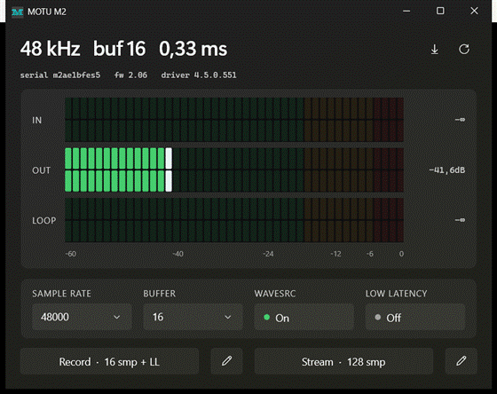

motu-ui
A small Windows control panel for MOTU M2, M4 and M6 audio interfaces — the meters, loopback monitor and presets the stock MOTU panel doesn't have.
Guide: MOTU M2/M4 loopback for OBS, Discord and recording →

Download for Windows GitHubWhat it does
- Live stereo ladders for IN and OUT with peak hold and clip indication
- Loopback monitor — a third meter showing exactly what OBS, Discord and other recorders hear
- ON AIR card (experimental, off by default) — loopback history, bus level and mute, a live list of the apps feeding the bus, and per-app mutes
- Test tone — one click plays 440 Hz through the device so you can verify loopback visually
- Sample rate (44.1–192 kHz) and host buffer size (16–1024 samples) with live latency readout
- Sync rate and Low Latency toggles, plainly named with tooltips that say what they do
- Editable presets — e.g. Record: 16 samples + low latency, Stream: 128 samples
- Driver update check against the MOTU download page for your exact model
vs. the stock M Series Control Panel
| stock panel | motu-ui | |
|---|---|---|
| Live input/output meters | no | yes |
| Loopback monitor (what OBS hears) | no | yes — plus bus level, mute and a per-app list |
| Test tone | no | yes |
| Buffer size / sample rate | yes | yes |
| Editable latency presets | no | yes |
| Driver update check | no | yes |
Requirements
- Windows 10 1809+ (x86 or x64 — the app itself is 32-bit because MOTU's control library is)
- A MOTU M2, M4 or M6 with the official MOTU driver installed
FAQ
- Is there a mixer for the MOTU M2?
- The M-series has no DSP mixer in hardware — routing is fixed. What you can control is buffer size, sample rate, sample-rate sync (WaveSRC) and low-latency mode, which is what motu-ui exposes, plus live meters the stock panel doesn't have.
- Can I hear my loopback in OBS?
- The LOOP meter shows the level of the loopback capture endpoint — the exact signal OBS or any recorder receives. Press the speaker button to send a 440 Hz test tone and watch both OUT and LOOP light up.
- Does it work on the M4 and M6?
- Yes. Device name, channel count and update page are read from the hardware. Meters show the first stereo pair on multichannel devices.
- What is WaveSRC?
- Wave Sample Rate Conversion — the driver's resampler for Windows (WAVE) audio. Same flag as the stock panel's "Sync Windows sample rate" checkbox, shown inverted: sync on = WaveSRC off = bit-exact; sync off = WaveSRC resamples apps at any rate.
- Is it safe? Does it replace the MOTU driver?
- No — it wraps the official MSeriesLib.dll that ships with the MOTU driver. Device state is read back after every change.